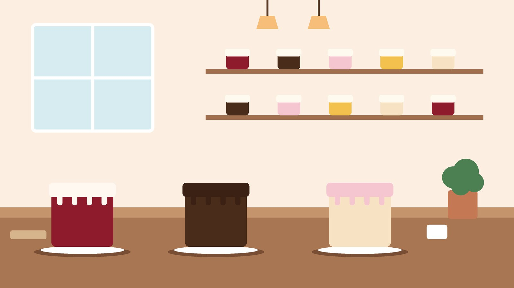

Sobre Dulce Shirley
Nuestra historia
Dulce Shirley nació en 2012 en la cocina de la casa de la familia Cedeño, en Portoviejo. Al principio eran dos tortas por semana para vecinos y compañeros de colegio. La receta del tres leches y la del chocolate con fresas son las mismas de esa época.
En 2017 abrimos el local de la calle Bolívar, con un mostrador pequeño y una vitrina prestada. Hoy horneamos alrededor de 60 pasteles al mes, la mayoría por pedido, y seguimos trabajando con proveedores de la zona: huevos de campo, frutas del mercado y cacao de Manabí.
No usamos mezclas preparadas ni conservantes. Por eso recomendamos consumir los pasteles dentro de los tres días siguientes y guardar los postres fríos en refrigeración.
«Si un pastel no se lo daría a mi familia, no sale del local.»

Misión, visión y valores
-
Misión
Hacer pasteles caseros con ingredientes frescos de la zona, para que cada celebración tenga un postre que se recuerde.
-
Visión
Ser la pastelería de referencia en Portoviejo y llegar a otros cantones de Manabí con entregas programadas.
-
Valores
Honestidad en los precios, cuidado en la manipulación de los alimentos y respeto por el trabajo de cada persona del equipo.
Horarios y ubicación
| Día | Horario | Observación |
|---|---|---|
| Lunes a viernes | 8h00 a 19h00 | Pedidos y retiros |
| Sábado | 9h00 a 16h00 | Pan dulce y postres fríos |
| Domingo | Cerrado | Solo entregas programadas |
Estamos en la calle Bolívar 123 y Sucre, a dos cuadras del parque central de Portoviejo. Puedes ubicarnos en OpenStreetMap (se abre en una pestaña nueva).
Teléfono: 096 060 6529 · Correo: scedeno4318@utm.edu.ec